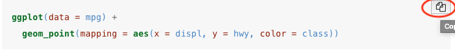
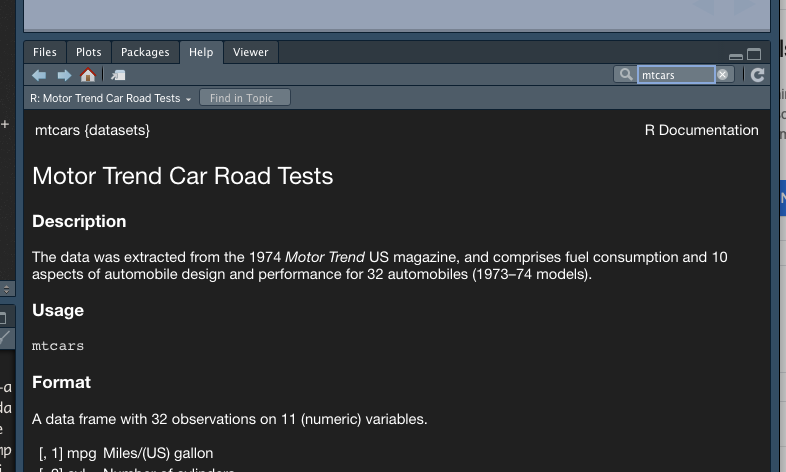
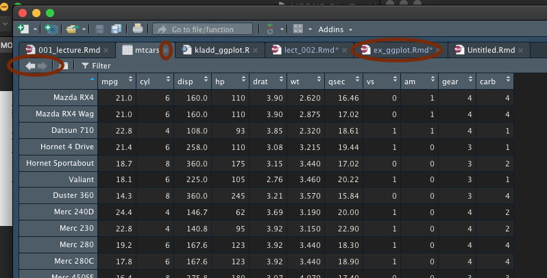
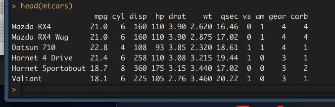

#s1 <- search(); s1
s1 <- .packages();s1[1] "stats" "graphics" "grDevices" "utils" "datasets" "methods"
[7] "base" #alternative
#(s1 <- .packages())#s1 <- search(); s1
s1 <- .packages();s1[1] "stats" "graphics" "grDevices" "utils" "datasets" "methods"
[7] "base" #alternative
#(s1 <- .packages())d1 <- as.list(data(package=s1))
d1 <- as.data.frame(d1[3]$results[,c(3, 4)])
d1 #df_print: paged in YAML Item
1 AirPassengers
2 BJsales
3 BJsales.lead (BJsales)
4 BOD
5 CO2
6 ChickWeight
7 DNase
8 EuStockMarkets
9 Formaldehyde
10 HairEyeColor
11 Harman23.cor
12 Harman74.cor
13 Indometh
14 InsectSprays
15 JohnsonJohnson
16 LakeHuron
17 LifeCycleSavings
18 Loblolly
19 Nile
20 Orange
21 OrchardSprays
22 PlantGrowth
23 Puromycin
24 Seatbelts
25 Theoph
26 Titanic
27 ToothGrowth
28 UCBAdmissions
29 UKDriverDeaths
30 UKgas
31 USAccDeaths
32 USArrests
33 USJudgeRatings
34 USPersonalExpenditure
35 UScitiesD
36 VADeaths
37 WWWusage
38 WorldPhones
39 ability.cov
40 airmiles
41 airquality
42 anscombe
43 attenu
44 attitude
45 austres
46 beaver1 (beavers)
47 beaver2 (beavers)
48 cars
49 chickwts
50 co2
51 crimtab
52 discoveries
53 esoph
54 euro
55 euro.cross (euro)
56 eurodist
57 faithful
58 fdeaths (UKLungDeaths)
59 freeny
60 freeny.x (freeny)
61 freeny.y (freeny)
62 infert
63 iris
64 iris3
65 islands
66 ldeaths (UKLungDeaths)
67 lh
68 longley
69 lynx
70 mdeaths (UKLungDeaths)
71 morley
72 mtcars
73 nhtemp
74 nottem
75 npk
76 occupationalStatus
77 precip
78 presidents
79 pressure
80 quakes
81 randu
82 rivers
83 rock
84 sleep
85 stack.loss (stackloss)
86 stack.x (stackloss)
87 stackloss
88 state.abb (state)
89 state.area (state)
90 state.center (state)
91 state.division (state)
92 state.name (state)
93 state.region (state)
94 state.x77 (state)
95 sunspot.month
96 sunspot.year
97 sunspots
98 swiss
99 treering
100 trees
101 uspop
102 volcano
103 warpbreaks
104 women
Title
1 Monthly Airline Passenger Numbers 1949-1960
2 Sales Data with Leading Indicator
3 Sales Data with Leading Indicator
4 Biochemical Oxygen Demand
5 Carbon Dioxide Uptake in Grass Plants
6 Weight versus age of chicks on different diets
7 Elisa assay of DNase
8 Daily Closing Prices of Major European Stock Indices, 1991-1998
9 Determination of Formaldehyde
10 Hair and Eye Color of Statistics Students
11 Harman Example 2.3
12 Harman Example 7.4
13 Pharmacokinetics of Indomethacin
14 Effectiveness of Insect Sprays
15 Quarterly Earnings per Johnson & Johnson Share
16 Level of Lake Huron 1875-1972
17 Intercountry Life-Cycle Savings Data
18 Growth of Loblolly Pine Trees
19 Flow of the River Nile
20 Growth of Orange Trees
21 Potency of Orchard Sprays
22 Results from an Experiment on Plant Growth
23 Reaction Velocity of an Enzymatic Reaction
24 Road Casualties in Great Britain 1969-84
25 Pharmacokinetics of Theophylline
26 Survival of passengers on the Titanic
27 The Effect of Vitamin C on Tooth Growth in Guinea Pigs
28 Student Admissions at UC Berkeley
29 Road Casualties in Great Britain 1969-84
30 UK Quarterly Gas Consumption
31 Accidental Deaths in the US 1973-1978
32 Violent Crime Rates by US State
33 Lawyers' Ratings of State Judges in the US Superior Court
34 Personal Expenditure Data
35 Distances Between European Cities and Between US Cities
36 Death Rates in Virginia (1940)
37 Internet Usage per Minute
38 The World's Telephones
39 Ability and Intelligence Tests
40 Passenger Miles on Commercial US Airlines, 1937-1960
41 New York Air Quality Measurements
42 Anscombe's Quartet of 'Identical' Simple Linear Regressions
43 The Joyner-Boore Attenuation Data
44 The Chatterjee-Price Attitude Data
45 Quarterly Time Series of the Number of Australian Residents
46 Body Temperature Series of Two Beavers
47 Body Temperature Series of Two Beavers
48 Speed and Stopping Distances of Cars
49 Chicken Weights by Feed Type
50 Mauna Loa Atmospheric CO2 Concentration
51 Student's 3000 Criminals Data
52 Yearly Numbers of Important Discoveries
53 Smoking, Alcohol and (O)esophageal Cancer
54 Conversion Rates of Euro Currencies
55 Conversion Rates of Euro Currencies
56 Distances Between European Cities and Between US Cities
57 Old Faithful Geyser Data
58 Monthly Deaths from Lung Diseases in the UK
59 Freeny's Revenue Data
60 Freeny's Revenue Data
61 Freeny's Revenue Data
62 Infertility after Spontaneous and Induced Abortion
63 Edgar Anderson's Iris Data
64 Edgar Anderson's Iris Data
65 Areas of the World's Major Landmasses
66 Monthly Deaths from Lung Diseases in the UK
67 Luteinizing Hormone in Blood Samples
68 Longley's Economic Regression Data
69 Annual Canadian Lynx trappings 1821-1934
70 Monthly Deaths from Lung Diseases in the UK
71 Michelson Speed of Light Data
72 Motor Trend Car Road Tests
73 Average Yearly Temperatures in New Haven
74 Average Monthly Temperatures at Nottingham, 1920-1939
75 Classical N, P, K Factorial Experiment
76 Occupational Status of Fathers and their Sons
77 Annual Precipitation in US Cities
78 Quarterly Approval Ratings of US Presidents
79 Vapor Pressure of Mercury as a Function of Temperature
80 Locations of Earthquakes off Fiji
81 Random Numbers from Congruential Generator RANDU
82 Lengths of Major North American Rivers
83 Measurements on Petroleum Rock Samples
84 Student's Sleep Data
85 Brownlee's Stack Loss Plant Data
86 Brownlee's Stack Loss Plant Data
87 Brownlee's Stack Loss Plant Data
88 US State Facts and Figures
89 US State Facts and Figures
90 US State Facts and Figures
91 US State Facts and Figures
92 US State Facts and Figures
93 US State Facts and Figures
94 US State Facts and Figures
95 Monthly Sunspot Data, from 1749 to "Present"
96 Yearly Sunspot Data, 1700-1988
97 Monthly Sunspot Numbers, 1749-1983
98 Swiss Fertility and Socioeconomic Indicators (1888) Data
99 Yearly Tree-Ring Data, -6000-1979
100 Diameter, Height and Volume for Black Cherry Trees
101 Populations Recorded by the US Census
102 Topographic Information on Auckland's Maunga Whau Volcano
103 The Number of Breaks in Yarn during Weaving
104 Average Heights and Weights for American Womentidyverselibrary(tidyverse)# 8 packages── Attaching core tidyverse packages ──────────────────────── tidyverse 2.0.0 ──
✔ dplyr 1.1.4 ✔ readr 2.1.5
✔ forcats 1.0.0 ✔ stringr 1.5.1
✔ ggplot2 3.5.1 ✔ tibble 3.2.1
✔ lubridate 1.9.3 ✔ tidyr 1.3.1
✔ purrr 1.0.2
── Conflicts ────────────────────────────────────────── tidyverse_conflicts() ──
✖ dplyr::filter() masks stats::filter()
✖ dplyr::lag() masks stats::lag()
ℹ Use the conflicted package (<http://conflicted.r-lib.org/>) to force all conflicts to become errorss2 <- .packages()
s2 [1] "lubridate" "forcats" "stringr" "dplyr" "purrr" "readr"
[7] "tidyr" "tibble" "ggplot2" "tidyverse" "stats" "graphics"
[13] "grDevices" "utils" "datasets" "methods" "base" s1is default packages, while s2is default packages and the ones we loaded above. s3will be the new packages loaded.
(s3 <- setdiff(s2, s1)) [1] "lubridate" "forcats" "stringr" "dplyr" "purrr" "readr"
[7] "tidyr" "tibble" "ggplot2" "tidyverse"Data sets in the packages loaded above (the 9 in tidyverse).
d3 <- as.list(data(package = s3))
d3 <- as.data.frame(d3[3]$results[,c(3, 4)])
d3 Item
1 lakers
2 gss_cat
3 fruit
4 sentences
5 words
6 band_instruments
7 band_instruments2
8 band_members
9 starwars
10 storms
11 billboard
12 cms_patient_care
13 cms_patient_experience
14 construction
15 fish_encounters
16 household
17 population
18 relig_income
19 smiths
20 table1
21 table2
22 table3
23 table4a
24 table4b
25 table5
26 us_rent_income
27 who
28 who2
29 world_bank_pop
30 diamonds
31 economics
32 economics_long
33 faithfuld
34 luv_colours
35 midwest
36 mpg
37 msleep
38 presidential
39 seals
40 txhousing
Title
1 Lakers 2008-2009 basketball data set
2 A sample of categorical variables from the General Social survey
3 Sample character vectors for practicing string manipulations
4 Sample character vectors for practicing string manipulations
5 Sample character vectors for practicing string manipulations
6 Band membership
7 Band membership
8 Band membership
9 Starwars characters
10 Storm tracks data
11 Song rankings for Billboard top 100 in the year 2000
12 Data from the Centers for Medicare & Medicaid Services
13 Data from the Centers for Medicare & Medicaid Services
14 Completed construction in the US in 2018
15 Fish encounters
16 Household data
17 World Health Organization TB data
18 Pew religion and income survey
19 Some data about the Smith family
20 Example tabular representations
21 Example tabular representations
22 Example tabular representations
23 Example tabular representations
24 Example tabular representations
25 Example tabular representations
26 US rent and income data
27 World Health Organization TB data
28 World Health Organization TB data
29 Population data from the World Bank
30 Prices of over 50,000 round cut diamonds
31 US economic time series
32 US economic time series
33 2d density estimate of Old Faithful data
34 'colors()' in Luv space
35 Midwest demographics
36 Fuel economy data from 1999 to 2008 for 38 popular models of cars
37 An updated and expanded version of the mammals sleep dataset
38 Terms of 12 presidents from Eisenhower to Trump
39 Vector field of seal movements
40 Housing sales in TXR for data science uses the mpg dataset for many of the examples in chapter 3. The first one ggplot() command is
ggplot(data = mpg) +
geom_point(mapping = aes(x = displ, y = hwy))
and as you will see the dataset is mpg. You should work through the examples in chapter 3. It´s easy to copy the code into R.

Just click the icon in the upper right corner and then paste the code into an R Notebook. (remember alt + ctrl + i (pc) or alt + cmb + i (on mac) before you paste in the copied code)
I will use another classic dataset called mtcars. It´s one of the classics and is allways available in R. We can read about it by entering mtcars in the search field in help.

We can start by viewing the data. Note there is a big difference between view and View. It´s the one with capital v we want here.
#View(mtcars)
This gives us a nice spreadsheet view of the dataset. We can return to our document either by clicking its tab, clicking the white arrow pointing left or by closing the mtcars tab by clicking the little x to the right of the tab name.
Another way to take a swift look at the data is by
head(mtcars) mpg cyl disp hp drat wt qsec vs am gear carb
Mazda RX4 21.0 6 160 110 3.90 2.620 16.46 0 1 4 4
Mazda RX4 Wag 21.0 6 160 110 3.90 2.875 17.02 0 1 4 4
Datsun 710 22.8 4 108 93 3.85 2.320 18.61 1 1 4 1
Hornet 4 Drive 21.4 6 258 110 3.08 3.215 19.44 1 0 3 1
Hornet Sportabout 18.7 8 360 175 3.15 3.440 17.02 0 0 3 2
Valiant 18.1 6 225 105 2.76 3.460 20.22 1 0 3 1(note that this is displayed as a nice table because we have df_print: paged up in the YAML header). In the console the same command would have given us
